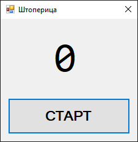
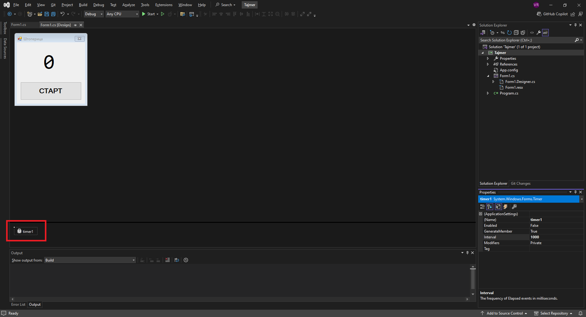

Тајмер¶
Контрола тајмер (енгл. Timer) дефинисана је у класи Timer у именском
простору System.Timers, односно склопу System.dll. Обрати пажњу да се, у
односу на остале контроле, ова контрола не налази у System.Windows.Forms и не
наслеђује директно или индиректно класу Control. Због тога ова контрола није
„видљива” на форми у току извршавања програма и нема заједничка својства,
догађаје и методе као остале Windows Forms контроле попут лабеле, дугмета или
оквира за текст.
Контрола Timer покреће догађај након задатог временског интервала, са
могућношћу покретања понављајућих догађаја. Заснована је на серверу који
покреће Elapsed догађај када прође број милисекунди дефинисан у својству
Interval. Користећи својство AutoReset, тајмер можеш да конфигуришеш да
покрене догађај једном или више пута.
Постоји неограничено конкретних примера употребе контроле тајмер. Једноставни примери могу бити: ажурирање одређене контроле на форми у одређеним временским интервалима (нпр. промена фотографије у оквиру за слике), аутоматски приказ и сакривање питања и одговора у квизу знања у одређеним временским интервалима, периодична провера стања неке компоненте или сервиса (нпр. интренет конекције), очитањање података са серијског порта у задатом временском интервалу (нпр. приликом комуникације са Ардуино микроконтролером) итд.
Својства и догађај тајмера¶
Контрола тајмер у Properties прозору има свега неколико својстава:
својством
Nameпоставља се или се очитава име контроле,својством
Enabledпоставља се или се очитава вредност која указује да ли је тајмер омогућен (True) или онемогућен (False),својством
Generate Memberодређује се да ли ће се за тајмер генерисати декларација у коду форме - вредностTrueподразумева да ће се генерисати приватно поље у класи форме, а вредностFalseда се неће генерисати поље у класи форме,својством
Intervalпоставља се или се очитава вредност у милисекундама за покретање догађаја исвојством
Modifiersодређује се ниво, односно модификатор приступа за поље које представља ту контролу у класи форме.
Контрола тајмер у Properties прозору има један догађај - догађај Tick који
се генерише када је истекао временски интервал одређен својство интервал.
Детаљан опис свих својстава, догађаја и метода класе Timer налази се у
званичној документацији.
Има их много и нема потребе наводити их све на овом месту.
Задатак¶
Нека је задатак да направиш једноставну GUI апликацију Штоперица.
Апликација треба да има једну лабелу и једно дугме. Иницијално, на дугмету
треба да буде исписан текст „СТАРТ”, а у лабели цифра 0. Када се кликне на
дугме, текст исписан у дугмету треба да се промени у „СТОП”, а у лабели, сваке
секунде треба да се ажурира протекло време у секундама. Када се кликне на
дугме са текстом „СТОП”, треба да се појави порука са коначним бројем секунди,
а контроле на форми да се врате у иницијално стање.
Креирај нови Windows Forms App (.NET Framework) пројекат са формом димензија
240×240. Постави једну лабелу label1 и једно дугме button1. У дизајнеру
можеш да промениш подразумевана својства којима се дефинише изглед форме,
лабеле и дугмета по жељи, на пример овако:

На форму превуци и једну контролу Timer. У току дизајна програма ова контрола биће видљива испод форме:

Једино својство додате контроле timer1 које треба да промениш је Interval.
Како је у задатку тражено да се лабела ажурира сваке секунде, у својству
Interval потребно је да унесеш број 1000, јер је \(1s=1000ms\).
Задатак можеш решити на више начина. Најједноставнији начин је да кликом на
дугме провериш да ли је тајмер покренут или није покренут, па на основу тога
донесеш одлуку да ли треба да га покренеш или зауставиш. Када покренеш тајмер,
покренућеш једини догађај тајмера Tick у којем треба да ажурираш број
секунди у лабели.
У јавној парцијалној класи Form1 : Form деклариши и иницијализуј поље
sekunde на следећи начин:
private int sekunde = 0;
Овом пољу приступаће и ажурирати га догађај клика миша на дугме и догађај откуцаја тајмера.
Кликни на timer1 и дефиниши догађај timer1_Tick на следећи начин:
private void timer1_Tick(object sender, EventArgs e)
{
++sekunde;
label1.Text = sekunde.ToString();
}
Значи, када се покрене тајмер, сваке секунде инкрементираће целобројну вредност
поља sekunde и исписати је у лабели.
Иницијално је контрола timer1 онемогућена, што можеш видети у Properties
прозору, где је својство Enabled контроле timer1 постављено на False.
То значи да треба да кликнеш на button1 и дефиниши догађај button1_Click на
следећи начин:
if (!timer1.Enabled)
{
timer1.Start();
}
else
{
timer1.Stop();
}
Ако тајмер није омогућен, метода timer1.Start() омогућава и покреће тајмер, а
у супротном метода timer1.Stop() зауставља и онемогућава тајмер.
Сада је још потребно да исправно решиш промену текста на контролама дугме и
лабела и прикажеш поруку о протеклом броју секунди у складу са захтевима
задатка. Иницијално је вредност поља sekunde једнака нули. Када се тајмер
покрене та вредност почеће да расте, текст у лабели почеће да се мења, а текст
на дугмету треба да се промени у СТОП. Ако се кликне на дугме док је тајмер
покренут, у поруци треба да се испише вредност поља sekunde, вредност поља
sekunde треба поставити на 0, у лабели променити текст на 0 и дугмету
променити текст на СТАРТ:
if (!timer1.Enabled)
{
timer1.Start();
button1.Text = "СТОП";
}
else
{
timer1.Stop();
MessageBox.Show("Број секунди: " + sekunde);
sekunde = 0;
label1.Text = "0";
button1.Text = "СТАРТ";
}
Комплетно решење задатка¶
using System;
using System.Windows.Forms;
namespace Tajmer
{
public partial class Form1 : Form
{
private int sekunde = 0;
public Form1()
{
InitializeComponent();
}
private void timer1_Tick(object sender, EventArgs e)
{
sekunde++;
label1.Text = sekunde.ToString();
}
private void button1_Click(object sender, EventArgs e)
{
if (!timer1.Enabled)
{
timer1.Start();
button1.Text = "СТОП";
}
else
{
timer1.Stop();
MessageBox.Show("Број секунди: " + sekunde);
sekunde = 0;
label1.Text = "0";
button1.Text = "СТАРТ";
}
}
}
}